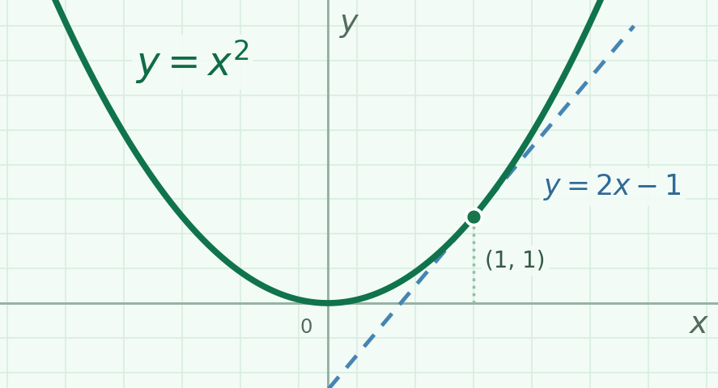

Academic year 2026–2027
Limits, derivatives,
integrals & series
极限、导数、积分与级数
- 111 lessons
- 15 reviews
- 6 FRQs

Unit 1
Limits and Continuity
1.1
Can Change Occur at an Instant?
瞬时变化率
Official sources
1.2
Defining Limits & Limit Notation
极限定义与记号
Official sources
1.3
Limit Values from Graphs
从图像读取极限
Official sources
1.4
Limit Values from Tables
从表格估计极限
Official sources
1.5
Algebraic Properties of Limits
极限定律
Official sources
1.6
Limits Using Algebraic Manipulation
用代数化简求极限
Official sources
1.7
Selecting Procedures for Limits
选择合适方法求极限
Official sources
1.8
Limits Using the Squeeze Theorem
用夹逼定理求极限
Official sources
1.9
Connecting Multiple Representations of Limits
连接极限的多种表示
Official sources
MID
Unit 1 Mid-Unit Review
1.1–1.9 阶段复习
Official source
1.10
Exploring Types of Discontinuities
探索间断类型
Official sources
1.11
Defining Continuity at a Point
一点处的连续性
Official sources
1.12
Confirming Continuity Over an Interval
区间上的连续性
Official sources
1.13
Removing Discontinuities
补定义消除可去间断
Official sources
1.14
Infinite Limits & Vertical Asymptotes
无穷极限与竖直渐近线
Official sources
1.15
Limits at Infinity & Horizontal Asymptotes
无穷远处的极限与水平渐近线
Official sources
1.16
Intermediate Value Theorem (IVT)
介值定理
Official sources
U1
End of Unit 1 Review
第一单元综合复习
Official source
Unit 3
Composite, Implicit & Inverse Functions
3.1
Official sources
3.2
Implicit Differentiation
隐函数求导
Official sources
3.3
Differentiating Inverse Functions
反函数求导
Official sources
3.4
Differentiating Inverse Trigonometric Functions
反三角函数求导
Official sources
3.5
Selecting Procedures for Calculating Derivatives
选择求导方法
Official sources
3.6
Calculating Higher-Order Derivatives
计算高阶导数
Official sources
U3
Official source
Unit 4
Contextual Applications of Differentiation
4.1
Interpreting the Meaning of the Derivative in Context
语境中导数的意义
Official sources
4.2
Straight-Line Motion: Connecting Position, Velocity, and Acceleration
直线运动：位置、速度与加速度
Official sources
4.3
Rates of Change in Applied Contexts Other Than Motion
非运动情境中的变化率
Official sources
4.4
Introduction to Related Rates
相关变化率入门
Official sources
4.5
Solving Related Rates Problems
求解相关变化率问题
Official sources
4.6
Approximating Values Using Local Linearity and Linearization
局部线性与线性化近似
Official sources
4.7
Using L'Hopital's Rule for Indeterminate Forms
洛必达法则与未定式极限
Official sources
U4
Official source
Unit 5
Analytical Applications of Differentiation
5.1
Using the Mean Value Theorem
使用中值定理
Official sources
5.2
Extreme Value Theorem, Extrema, and Critical Points
极值定理、极值与临界点
Official sources
5.3
Intervals of Increase and Decrease
函数的递增与递减区间
Official sources
5.4
First Derivative Test for Relative Extrema
一阶导数检验与局部极值
Official sources
5.5
Candidates Test for Absolute Extrema
候选点检验与绝对极值
Official sources
5.6
Determining Concavity over a Function’s Domain
判断函数的凹向性
Official sources
5.7
Second Derivative Test for Extrema
二阶导数检验
Official sources
U5·M
Mid-Unit 5 Review
第五单元阶段复习
Official source
5.8
Sketching Graphs of Functions and Their Derivatives
函数及其导函数图像
Official sources
5.9
Connecting a Function, Its First Derivative, and Its Second Derivative
连接函数、一阶导数与二阶导数
Official sources
5.10
Introduction to Optimization Problems
优化问题入门
Official sources
5.11
Solving Optimization Problems
求解优化问题
Official sources
5.12
Exploring Behaviors of Implicit Relations
隐式关系的行为
Official sources
U5
End of Unit 5 Review
第五单元综合复习
Official source
Unit 6
Integration & Accumulation of Change
6.1
Exploring Accumulation of Change
探索变化的累积
Official sources
6.2
Approximating Areas with Riemann Sums
用黎曼和近似面积
Official sources
6.3
Riemann Sums, Summation Notation, and Definite Integral Notation
黎曼和、求和符号与定积分符号
Official sources
6.4
The Fundamental Theorem of Calculus and Accumulation Functions
微积分基本定理与累积函数
Official sources
6.5
Interpreting the Behavior of Accumulation Functions Involving Area
用面积解释累积函数的行为
Official sources
U6-MID
Mid-Unit 6 Review
第六单元阶段复习
Official source
6.6
Applying Properties of Definite Integrals
应用定积分的性质
Official sources
6.7
The Fundamental Theorem of Calculus and Definite Integrals
微积分基本定理与定积分
Official sources
6.8
Finding Antiderivatives and Indefinite Integrals: Basic Rules and Notation
原函数与不定积分：基本规则与记号
Official sources
6.9
Integrating Using Substitution
换元积分法
Official sources
6.10
Integrating Functions Using Long Division and Completing the Square
用长除法与配方法积分
Official sources
6.11
Integration by Parts
分部积分
Official sources
6.12
Integrating Using Linear Partial Fractions
线性部分分式积分
Official sources
6.13
Evaluating Improper Integrals
计算反常积分
Official sources
6.14
Selecting Techniques for Antidifferentiation
选择反求导方法
Official sources
U6
End of Unit 6 Review
第六单元综合复习
Official source
Unit 7
Differential Equations
7.1
Modeling Situations with Differential Equations
用微分方程建立模型
Official sources
7.2
Verifying Solutions for Differential Equations
验证微分方程的解
Official sources
7.3
Sketching Slope Fields
绘制斜率场
Official sources
7.4
Reasoning Using Slope Fields
用斜率场推理
Official sources
7.5
Approximating Solutions Using Euler’s Method
用欧拉法近似解
Official sources
7.6
General Solutions Using Separation of Variables
用分离变量法求通解
Official sources
7.7
Particular Solutions Using Initial Conditions and Separation of Variables
用初始条件与分离变量法求特解
Official sources
7.8
Exponential Models with Differential Equations
微分方程中的指数模型
Official sources
7.9
Logistic Models with Differential Equations
微分方程中的 Logistic 模型
Official sources
U7
Official source
Unit 8
Applications of Integration
8.1
Average Value of a Function on an Interval
区间上函数的平均值
Official sources
8.2
Connecting Position, Velocity, and Acceleration of Functions Using Integrals
用积分联系位置、速度与加速度
Official sources
8.3
Using Accumulation Functions and Definite Integrals in Applied Contexts
应用情境中的累积函数与定积分
Official sources
8.4
Finding the Area Between Curves Expressed as Functions of x
关于 x 的曲线间面积
Official sources
8.5
Finding Area Between Curves Expressed as Functions of y
关于 y 的曲线间面积
Official sources
8.6
Finding the Area Between Curves That Intersect at More Than Two Points
多交点曲线间面积
Official sources
U8-MID
Mid-Unit 8 Review
第八单元期中复习
Official source
8.7
Volumes with Cross Sections: Squares and Rectangles
正方形与矩形截面体积
Official sources
8.8
Volumes with Cross Sections: Triangles and Semicircles
三角形与半圆截面体积
Official sources
8.9
Volume with Disc Method: Revolving Around the x- or y-Axis
绕坐标轴旋转的圆盘法
Official sources
8.10
Volume with Disc Method: Revolving Around Other Axes
绕其他直线旋转的圆盘法
Official sources
8.11
Volume with Washer Method: Revolving Around the x- or y-axis
绕坐标轴旋转的垫圈法
Official sources
8.12
Volume with Washer Method: Revolving Around Other Axes
绕其他直线旋转的垫圈法
Official sources
8.13
The Arc Length of a Smooth, Planar Curve and Distance Traveled
光滑平面曲线的弧长与路程
Official sources
U8
End of Unit 8 Review
第八单元综合复习
Official source
Unit 9
Parametric Equations, Polar Coordinates & Vector-Valued Functions
9.1
Defining and Differentiating Parametric Equations
参数方程：定义、轨迹与一阶导数
Official sources
9.2
Second Derivatives of Parametric Equations
参数方程的二阶导数与凹凸性
Official sources
9.3
Finding Arc Lengths of Curves Given by Parametric Equations
参数曲线的弧长
Official sources
9.4
Defining and Differentiating Vector-Valued Functions
向量值函数：定义与求导
Official sources
9.5
Integrating Vector-Valued Functions
向量值函数的积分与初始条件
Official sources
9.6
Solving Motion Problems using Parametric and Vector-Valued Functions
用参数方程与向量值函数解决运动问题
Official sources
9.7
Defining Polar Coordinates and Differentiating in Polar Form
极坐标的定义与极坐标求导
Official sources
9.8
Find the Area of a Polar Region or the Area Bounded by a Single Polar Curve
单条极坐标曲线围成区域的面积
Official sources
9.9
Finding the Area of the Region bounded by Two Polar Curves
两条极坐标曲线之间区域的面积
Official sources
U9
Official source
Unit 10
Infinite Sequences and Series
10.1
Defining Convergent and Divergent Infinite Series
定义收敛与发散的无穷级数
Official sources
10.2
Working with Geometric Series
等比级数
Official sources
10.3
The nth Term Test for Divergence
发散的第 n 项判别法
Official sources
10.4
Integral Test for Convergence
积分判别法
Official sources
10.5
Harmonic Series and p-series
调和级数与 p 级数
Official sources
10.6
Comparison Tests for Convergence
收敛性的比较判别法
Official sources
10.7
Alternating Series Test for Convergence
交错级数判别法
Official sources
10.8
Ratio Test for Convergence
比值判别法
Official sources
10.9
Determining Absolute or Conditional Convergence
判断绝对收敛或条件收敛
Official sources
U10-MID
Mid-Unit 10 Review
第十单元期中复习
Official source
10.10
Alternating Series Error Bound
交错级数误差界
Official sources
10.11
Finding Taylor Polynomial Approximations of Functions
用泰勒多项式近似函数
Official sources
10.12
Lagrange Error Bound
拉格朗日误差界
Official sources
10.13
Radius and Interval of Convergence of Power Series
幂级数的收敛半径与收敛区间
Official sources
10.14
Finding Taylor or Maclaurin Series for a Function
求函数的泰勒级数或麦克劳林级数
Official sources
10.15
Representing Functions as a Power Series
用幂级数表示函数
Official sources
U10
End of Unit 10 Review
第10单元期末复习
Official source
Exam practice
2022 BC Free-Response
Q1
Toll-Plaza Accumulation
收费站：速率累积与最大排队数 · Calculator required
Official sources
Q2
Parametric Particle Motion
参数运动：斜率、速率、加速度、位置与路程 · Calculator required
Official sources
Q3
Reading the Graph of f′
读导函数图像：面积、拐点与最值 · No calculator
Official sources
Q4
Melting Cone: Rates, IVT & Accumulation
融化圆锥：变化率、介值与累积 · No calculator
Official sources
Q5
Area, Cross Sections & Improper Volume
面积、截面体积与反常积分 · No calculator
Official sources
Q6
Power Series: Convergence, Error & Derivative
幂级数：收敛、误差与求导 · No calculator
Official sources
Today’s planned position
Unit 1Plan begins Sep 21
Target: Unit 1 complete · ready for 2.1
Actual classroom progress
On plan · 按计划进行
Saved on this device. Update after class.
| Dates | Class days | Sections / Pace | Target | Focus |
|---|
Fall dates follow the school calendar. Spring dates are estimates from the Feb 22 opening date and may shift around school events.
Site visits
Page views · Home & Notes · Shanghai time
About these statistics
统计首页和 Notes 页的浏览次数；刷新会再次计数。后台记录访问时间、页面、IP 与国家/地区，IP 明细仅教师可见，保留 30 天。累计浏览次数长期保留，不使用追踪 Cookie。校园网络可能共用 IP，独立 IP 数不等于人数。